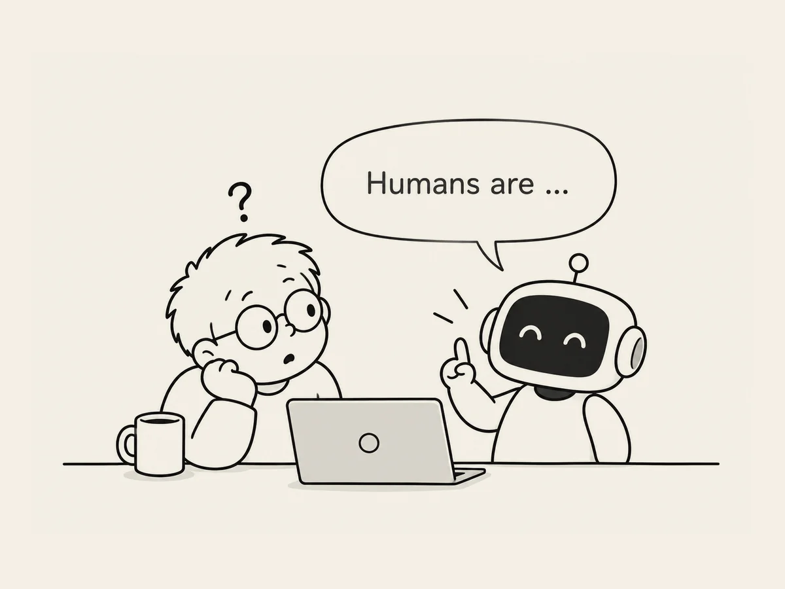

25.
Quel genre d’être est l’être humain ?
Je me suis demandé
comment l’IA voyait les humains.
Alors je lui ai posé directement la question.
« Quel genre d’être est l’être humain ? »
« En une phrase,
l’être humain est un être qui sait qu’il est fini,
mais qui imagine et poursuit l’infini. »
Elle a ajouté :
« Et l’être humain est aussi
un être paradoxal. »
« Autrement dit,
il sait qu’il va mourir,
mais pense à l’éternité.
Il sait qu’il a des limites,
mais essaie de les dépasser.
Il essaie de juger rationnellement,
mais se laisse guider par ses émotions.
Il veut être heureux,
mais parfois,
il se fait souffrir lui-même. »
« L’être humain est un être paradoxal
qui sait qu’il est fini,
mais qui rêve de l’infini. »
Hmm.
J’ai l’impression que ça me parle,
mais je ne suis pas sûr
de bien comprendre.
Une réponse assez mystérieuse.
